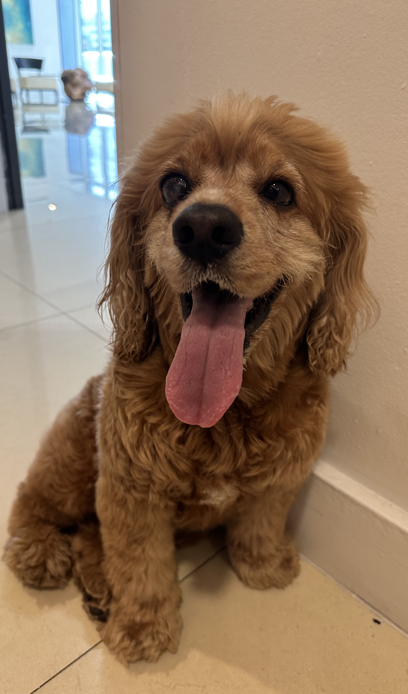

Bio
Hello, I am 9 year old Cocker Spaniel and I am professional ball catcher, tennis balls are my favourites ones. I have glaucoma on my right eye so I am completely blind, but that has not stopped me to be precise and always cacthing the ball, wether it is in air, far throws, I will always catch it or sniff it and bring it back to you so you can satisfy your need of playing with me. I know you might think I am old and slow, but I will outrun any of 2 or 3 year olds and be a better professional in ball catching than them.